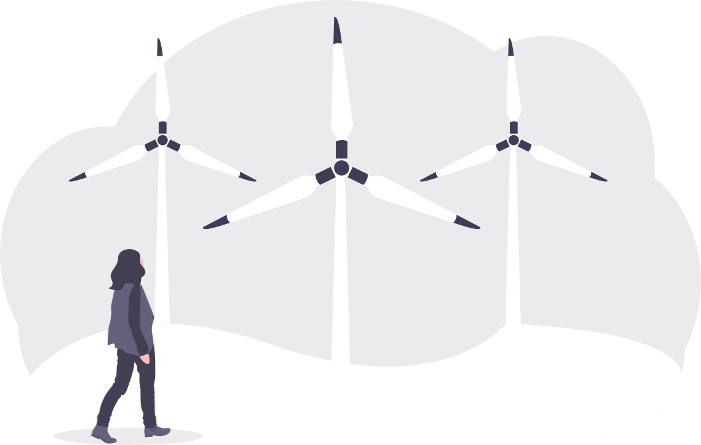

Ce site n’utilise aucune bibliothèque externe, il est écrit entièrement en HTML/CSS, il fait mois de 100ko, il est conçu de manière élégante sans surplus de style, juste le contenu nécessaire, par ailleurs le contraste des couleurs a été choisi en fonction de sa lisibilité, toutes les images disposent d’un texte alternatif afin de faciliter l’accessibilité.
Il obtient un score sur Lighthouse de 98 en performance et 100 en accessibilité.
Voir les réponses >Votre entreprise a décidé d’acquérir une solution SaaS pour son portail de statistiques auprès d’un éditeur et vous devez rédiger dans l’appel d’offre la partie sur les exigences techniques en termes de sobriété numérique. Listez les critères qui vous semblent non négociables sous forme de user stories fictives. (exemple : en tant qu’éditeur je dois m’assurer que ma solution est hébergée sur un serveur localisé en France)
Question suivante >Quels éléments du cours allez-vous utiliser dans votre alternance (pour les personnes qui ont trouvé) et/ou votre vie étudiante (pour les personnes en recherche) ?
Question suivante >Comme je suis développeur web au sein de mon entreprise, je vais surtout appliquer la partie sur l'écoconception, car elle offre des solutions concrètes que je peux mettre en place à mon échelle. Je compte m'appuyer sur les 115 bonnes pratiques du collectif GreenIT.fr, car elles fournissent des lignes directrices précieuses pour développer des applications de manière plus éco-responsable.
De plus, j'ai l'intention d'utiliser des outils d'analyse tels que Eco Index ou Lighthouse sur les applications que je développe.
Par ailleurs, la partie sur l'accessibilité des applications sera également un point clé de ma démarche. Souvent négligée, j’essaierais de respecter les règles du RGAA et je m'assurerai que mes applications soient utilisables par un public aussi large que possible.
Comment évaluez-vous la maturité de sobriété numérique de votre organisation ? (ou d’une autre organisation si pas encore d’alternance). Détaillez les actions déjà mises en œuvre et ce qu’il faudrait selon vous améliorer.
Question suivante >Mon entreprise a pris des mesures en faveur de la sobriété numérique, avec la signature du Manifeste du Planet Tech Care et la labellisation du Numérique Responsable.
L'adoption des normes ISO 14001 et ISO 9001, ainsi que la mise en place d'une politique d'achats responsables et d'une analyse du cycle de vie des produits, démontrant leur engagement envers des pratiques durables.
Cependant, pour renforcer leur maturité, ils pourraient intensifier la sensibilisation interne, mettre en place un suivi régulier des progrès et encourager l'innovation durable dans leurs solutions numériques.
Comment imaginez-vous le numérique en 2050 ?
Je pense que le numérique en 2050 sera axé sur la responsabilité environnementale, avec une utilisation accrue des énergies renouvelables. Les data centers joueront un rôle majeur, en exploitant leur chaleur dégagée de manière ingénieuse, comme le projet du data center qui chauffe la piscine olympique pour les JO de Paris 2024 à Saint-Denis.
Cependant, le défi principal réside dans la gestion exponentielle des données. Malgré les avancées technologiques, il est probable que la demande continue d’augmenter, et il sera essentiel de mettre en place des solutions efficaces pour gérer cette masse de données tout en maintenant la sobriété numérique.
L'éducation à la sobriété numérique sera cruciale. Les individus devront être formés et sensibilisés pour adopter des comportements numériques plus responsables. Cela contribuera à atténuer l'impact environnemental tout en favorisant une utilisation plus consciente et durable du numérique.
En résumé, le numérique en 2050 devrait évoluer vers une approche plus durable, tirant parti des énergies renouvelables et optimisant l'utilisation des données. La formation et la sensibilisation joueront un rôle clé dans la création d'une communauté numérique plus responsable.